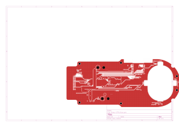
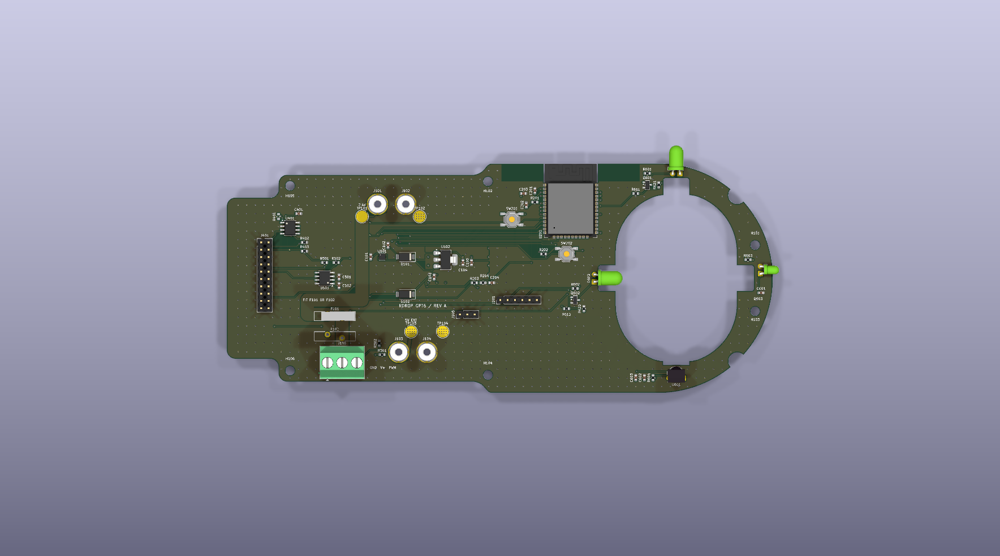
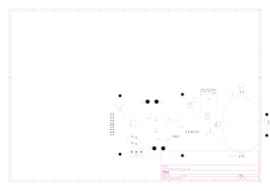
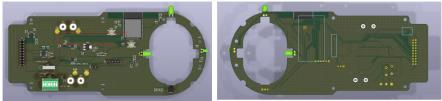
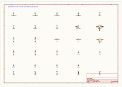
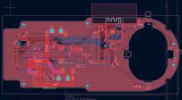

A complete new board.
A foundation to refine.
GPT6 generated a replacement ESP32 design with a new circuit, routed PCB, 3D models and manufacturing exports within the inherited outline and cutout.
What was generated.
- ESP32-WROOM-32E, AS5600 and the two required IR sensor pairs.
- Separate emitter drivers, CAN interface, 20-pin interface and UART programming header.
- Logic LDOs: TLV76750 and TLV1117LV33 ceramic-compatible alternatives.
- Current-rated 3-pin servo terminal and one-of-two MF-RG900 fuse options.
- Regulator standoffs and solder pads retained; battery conversion remains external.
- Gerbers, Excellon drills, variant BOMs, placement files, STEP/GLB models and connection tables.
Current, fuse and thermal boundaries
The later brief specifies 5–7 A normal servo current and 15 A for 30 seconds. The developer chose approximately 15 A trip over guaranteed pulse endurance: MF-RG900 can interrupt that pulse. The redesigned board uses 2 oz copper; it is not an equivalent 1 oz comparison.
Named 3–14S UBEC is appropriate only within its input rating. The Step 1 developer notes report a 20 A APM rating, while the redesign report requests exact model and pulse/thermal evidence. Preserve that distinction; source ratings do not qualify the complete PCB path.
PCB layout comparison.
The inherited geometry is retained; the circuitry and placement are newly generated. The original and redesign exports have different presentation layers and scales.




3D and assembly comparison.



Standard library component models illustrate placement. The resettable fuse uses a conservative body envelope, not detailed manufacturer CAD.
Developer’s annotated examples.
Embedded screenshots from the source notes; low-resolution evidence, not substitutes for native CAD.



Download Step 3 native project.
Complete redesign package: schematic, PCB, local 3D models, BOM/CPL variants, manufacturing exports, report and verification records. Prototype qualification remains required.
Download ZIP · 4.6 MB